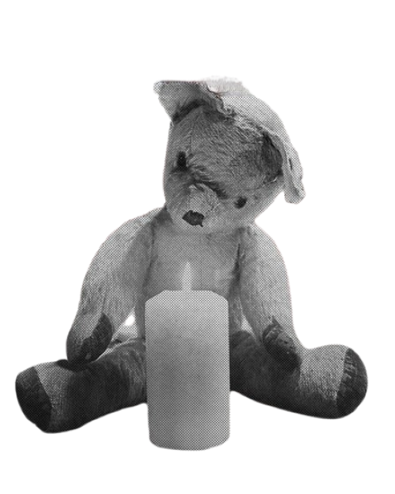

BORDER:DAY ONE
GIVEN-TAKEN
ENHYPEN
1st Mini Album
El primer "grupo global creado por fans" del K-Pop



Introduccion
Las complejas emociones que experimentan los chicos en medio de la conexión, el descubrimiento y el crecimiento juntos
en la frontera hacia lo desconocido y su fuerte resolución para superar esto se ilustran a través de los dos conceptos visuales de este álbum 'DAWN' y 'DUSK'.
1er Mini Álbum "BORDER : DAY ONE" "BORDER : DAY ONE", la historia de unos chicos que se encuentran en la frontera entre dos mundos opuestos ENHYPEN cuenta la historia de unos chicos que se encuentran en la frontera con "BORDER : DAY ONE".
Habiendo sobrevivido a 'I-LAND', un espacio de competencia, armonía y crecimiento, los siete chicos finalmente enfrentan el primer día en el nuevo mundo para comenzar su largo viaje.
Desde aprendices hasta artistas, desde individuos hasta miembros del equipo, los chicos sienten felicidad por su supervivencia, pero al mismo tiempo una sensación de ansiedad por su futuro desconocido mientras dan sus primeros pasos a través de la frontera que divide el pasado y el futuro.
Habiendo sobrevivido a 'I-LAND', un espacio de competencia, armonía y crecimiento, los siete chicos finalmente enfrentan el primer día en el nuevo mundo para comenzar su largo viaje.
Desde aprendices hasta artistas, desde individuos hasta miembros del equipo, los chicos sienten felicidad por su supervivencia, pero al mismo tiempo una sensación de ansiedad por su futuro desconocido mientras dan sus primeros pasos a través de la frontera que divide el pasado y el futuro.
Refleja sus preocupaciones.
Contiene el significado de cantar el primer día de dejar atrás el pasado y salir de los límites hacia un nuevo futuro.
Intro:Walk the Line
Given-Taken
Let Me In (20 CUBE)
10 Months
Flicker
Outro:Cross the Line